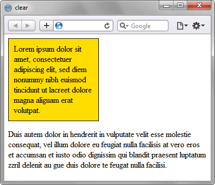

Отменяет обтекание элемента одновременно с правого и левого края.
Это свойство применяется к блочным элементам, когда необходимо
вернуть обычное течение документа после использования float.
Синтаксис
clear: none | left | right | both | inherit
none
Отменяет действие свойства clear.
Отменяет действие свойства clear.
left
Отмена обтекания с левого края элемента.
Отмена обтекания с левого края элемента.
right
Отмена обтекания с правого края элемента.
Отмена обтекания с правого края элемента.
both
Отмена обтекания одновременно с левого и правого края элемента.
Отмена обтекания одновременно с левого и правого края элемента.
inherit
Наследует значение родителя.
Наследует значение родителя.
Пример:
<!DOCTYPE html>
<html>
<head>
<meta charset="utf-8">
<title>clear</title>
<style>
.layer1 {
float: left;
width: 200px;
background: #DCDCDC;
padding: 10px;
}
.layer2 {
margin-left: 220px;
background: #F0F0F0;
padding: 10px;
}
.footer {
clear: both;
background: #B0C4DE;
padding: 10px;
margin-top: 10px;
}
</style>
</head>
<body>
<div class="layer1">
Левый блок
</div>
<div class="layer2">
Основной текст страницы.
</div>
<div class="footer">
Подвал сайта после clear.
</div>
</body>
</html>
Результат применения свойства clear:
